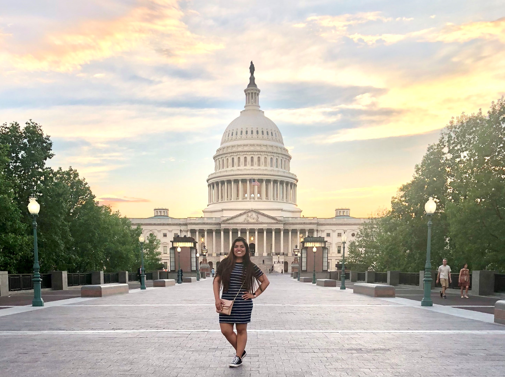

Projected Career Path
My interst in public service drew me to the MPA program in the Marriott School of Business. After discovering my love for quantitative subjects while taking
my Quantitative Decision Analysis and Statistical Analysis classes, I enrolled in as many of those courses as I could in my second semester. I took Public Financial
Management, Data Science for Managers, Information Systems for Business, and Program Evaluation.
My classes thus far have led me to look for opportunities in the government related to budgeting and/or program evaluation. My data science-related courses led me to
develop a liking for programming and data analysis. I hope to learn more about data analysts opportunities in the government.
Related Experiences
In hopes of exploring the nonprofit side of public service, I interned for the United Way of Utah County in the Summer of 2021. I throughly enjoyed my expereince and
loved engaging with members of my community; however, after realizing my passion for quantitative subjects, I began searching for similar internship expereinces.
I interviewed and was offered an internship with the Board of Governors of the Federal Reserve System in Washington, DC. I will be joining the Management & Operations
team as an internal performance auditor in the Summer of 2022. I look forward to the growth I will have with the Board and using my data skills to serve the nation.
Learn more about careers with the Board here or watch the video below!
Anticipated Contributions
In May of 2018, I joined the BYU Political Science department in the Beyond BYU Washington, DC trip. During my one-week stay in the nation's capital, I fell in love
with the spirit of forward thinking and innovation found in DC. I knew I wanted to be back one day to be a part of this incredible environment. My internship with
the Federal Reserve Board (FRB) is a stepping stone to achieving this goal. Upon graduating, I hope to part of an organization that works together to develop unique
solutions to enhance government work. I am particularly attracted to the FRB because of the signifcant impact it has on the nation. I hope to enable greater efficiency
and effectiveness at the FRB to optimize the use of Americans' tax dollars.
